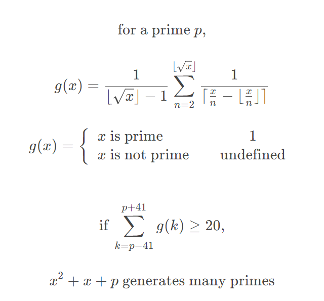

Prime Generating Polynomial Generator

Works by creating a primetesting function which returns undefined if x is not prime (if x/n returns an integer then x/n - floor(x/n) = 0 and 1/0 = undefined)
If the amount of primes from p-41 to p+41 is greater than 20, then p has fewer divisible numbers nearby and so less values of x can "combine" to be divisible by a nearby number.